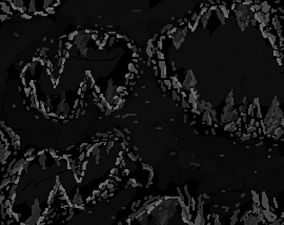

Whole
[ Download on itch.io ]
Whole was a project submitted for a game jam in which I had the opportunity to lead our team over the week. The greatest challenge for this project was, of course, the time constraint. Not only did I have the opportunity to lead our team, but I was also the only programmer. So to manage to put everything together in a cohesive manner, from UI, to unique character movement and abilities, to power ups and enemies, all within a week, needless to say was a challenge. However, it felt gratifying to be able to test my skills as a developer while under that time pressure. As game developers, we constantly have to be on top of the newest technologies in the industry, but once in a while, it's feels good to dive into something using only what you know, and to push your current knowledge and applications of that knowledge to their limits. It really gave me a better sense of just how much I could expand upon and do even with fundamental knowledge that I hadn't revisited in a long time, and even though the final product wasn't exactly what I had envisioned due to the time constraint, I came out feeling proud of my abilities.
Another challenge for me during the game jam revolved around taking a leadership role on top of my responsibilities as a programmer. In some ways, this worked out to the benefit of the team. For example, I was able to use my experience with Git and Unity to organize the project remotely in a way that everyone would easily be able to contribute during the span of the project. Besides just setting up the repository, I organized the structure of the Unity project files to be centered around other members creating their own prefabs in order to minimize the chance of any merge conflicts that might waste our time, and by using good coding practices within Unity's API for C#, the other members could also start to integrate the elements and levels they built together as we closed in on the deadline. I also had the opportunity to organize meetings for the team when necessary, as well as centralizing communication about tasks using my experience with "kanban" software, so that we could not only prioritize who need to do what, as well as what need to be done for the project most immediately overall, but also so that no one accidentally worked on the same area of the game at the same time, which also once again led to less chance for any merge conflicts.
While handling all of this on top of programming all of the game under the given time constraint was very challenging, it was once again simultaneously gratifying to challenge myself, and to be pushed forward by the expectations of my team. From this aspect as well, I got a better view of where my current abilities could take me, in this case delivering on the expectations of others, whose ideas were not limited by concern for technical limitations. With that in mind, I was able to surprise myself with how I was able to deliver on these ideas from a new perspective from my own. Moments like these in game development truly make me feel like we can do nearly anything within our medium; it was a fantastic experience to share a vision for the game and reach towards it together as far as we could, and I couldn't have done it without our the rest of our team working hard all throughout the jam as well.
